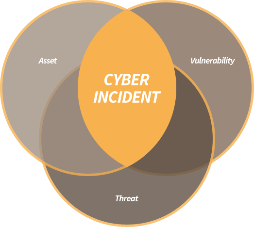

What is Netsecop?
24/7 AUTOMATIC MALWARE MONITORING TO RED TEAMING SERVICE
Netsecop is the network security cop at your service. Netsecop’s network security operations includes everything, from 24/7 automatic malware monitoring to red teaming service, to protect your business from cyber threats.
Netsecop’s SECaaS (Security as as Service) subscription packages and Exclusive Consultancy Services will make you confident and secure in cyber space.
Netsecop’s SECaaS subscription packages has 365 WebSecurity Suite and 365 NetMonitor Suite. 365 WebSecurity Suite contains a wide set of cloud based tools malware scan, vulnerability scan and 24/7 monitoring for a resilient web service. 365 NetMonitor Suite is designed for all types of servers in internal and external networks to gather information and alert for anomalies. Please check services section in our website for details.
Netsecop’s exclusive consultancy services are performed remotely by our cyber security experts. These services are suited to your needs. We have fourteen types of consultancy services from cyber incident response to mobile application security testing. Please check services section in our website for details. Dealing with cyber threats is a process that should be run in parallel with the lifetime of cyber attacks. Netsecop takes three phases into account to make you secure, which are before cyber incidents, during cyber incidents and after cyber incidents.
Most of our service, including subscription packets and some exclusive services, falls into “before cyber incident phase” to make sure that you are secure enough. Our services like incident response and APT analysis are security efforts that are performed at the time of an incident. Finally, malware and forensics analysis, and malware removal services fall into the after incident phase. By taking this perspective into account, Netsecop handles the cyber security in a holistic manner from beginning to the end of cyber attacks.
Cyber security has three facets, which are assets, vulnerabilities and threats. Cyber security services and products that do not fail considering at least one of these facets will fail eventually. Netsecop handles all three assets in an intelligent way. Cyber assets are online servers and services owned/operated by our customers that have a value and need protection. Vulnerabilities are the programming and configuration errors at these assets. Threats are the active agents that exploits the vulnerabilities. A real cyber security incident occur the scene whenever these three factors come into the effect. Without threats, a vulnerability does not harm you. Without vulnerabilities, threat can do nothing. Netsecop’s cyber security solutions considers assets, vulnerabilities and threats into account. For example, Netsecop’s netmonitor packet focuses on your cyber assets. Netsecop’s web scanning packets and most of the exclusive services are dedicated to discover your vulnerabilities. Netsecop’s daily cyber threat inspection packet focuses on the cyber threats.
